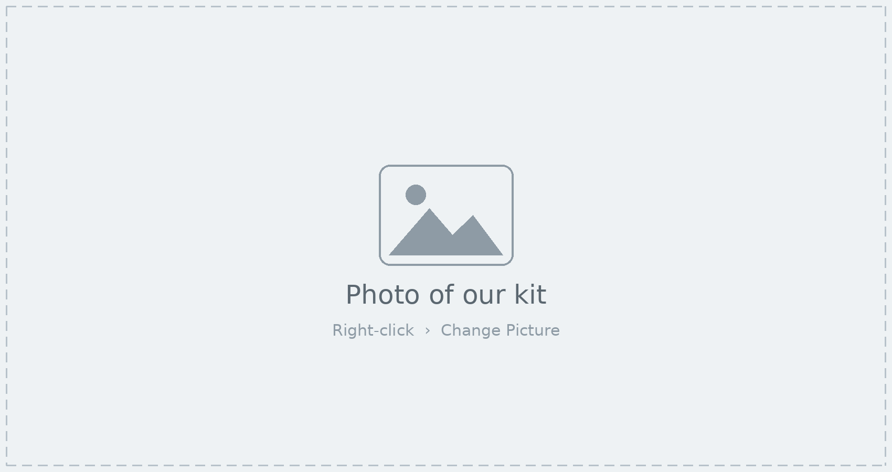

Technologies available for teaching and research — and ideas for putting them to work.
This catalogue presents the technologies available in the lab, one at a time, with a photo of our own equipment, a plain-language description, and concrete ideas for using it in courses and research projects. It is meant to be browsed, not read cover to cover: jump to anything that catches your eye from the contents below.
Each technology is a starting point. If you see a connection to a course, a thesis or a study, the last section explains how to book a demo, borrow equipment and start a collaboration.
Movo MDX-2 bundle — two-person recording setup for computers, tablets and phones

A compact two-channel recording setup that lets two speakers record clean, separate audio tracks on a laptop, tablet or phone — no studio required. The MDX-2 interface runs on batteries or USB power, so the kit can be carried to a classroom, an office or the field and set up in minutes. It suits podcasting, interviews, pronunciation work and any project where students produce audio rather than only consume it.
Nothing in this catalogue needs to be used exactly as described. If a technology sparks an idea for a lesson, an assignment, a thesis or a study, we would like to hear it — and we can help with setup, training and design. Small experiments are welcome; most of our projects started as one.
Coordinator: Name
Email: name@university.edu
Office: Building · Room
Open hours: Mon–Fri, 9 am – 5 pm
Demo request: booking form link
Equipment loans: up to 2 weeks; sign-out sheet at the front desk
Lab website: lab website link